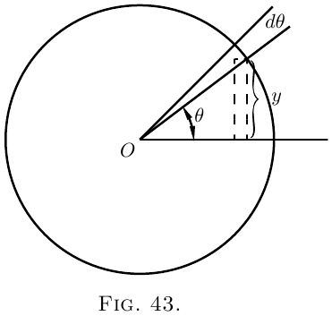

怎样处理正弦和余弦
希腊字母常用来表示角，所以我们把字母 $\theta$（“theta”）
作为任意变量角的常用字母。
让我们考虑函数
\[
y= \sin \theta.
\]

我们要研究的是 $\dfrac{d(\sin \theta)}{d \theta}$ 的值；
换句话说，如果角 $\theta$ 发生变化，我们就要找出正弦的增量
与角的增量之间的关系，而这两个增量本身都无限小。
看 图 43，其中若圆的半径为 $1$，
$y$ 的高度就是正弦，$\theta$ 就是角。现在，假设 $\theta$
增加一个小角 $d \theta$，也就是一个角的元素，
那么 $y$ 的高度，也就是正弦，会增加一个小元素 $dy$。
新的高度 $y + dy$ 将是新角 $\theta + d \theta$ 的正弦；
写成方程就是
\[
y+dy = \sin(\theta + d \theta);
\]
从这个方程减去第一个方程，得到
\[
dy = \sin(\theta + d \theta)- \sin \theta.
\]
右边的量是两个正弦之差，而三角学书会告诉我们怎样把它算出来。
它们告诉我们，如果 $M$ 和 $N$ 是两个不同的角，
\[
\sin M - \sin N = 2 \cos\frac{M+N}{2}·\sin\frac{M-N}{2}.
\]
于是，如果把一个角取为 $M= \theta + d \theta$，
另一个角取为 $N= \theta$，就可以写成
\begin{align*}
dy &= 2 \cos\frac{\theta + d\theta + \theta}{2}
· \sin\frac{\theta + d\theta - \theta}{2},\\
\text{即}\;
dy &= 2\cos(\theta + \tfrac{1}{2}d\theta)
· \sin\tfrac{1}{2} d\theta.
\end{align*}
但是如果把 $d \theta$ 看作无限小，那么在极限中，
与 $\theta$ 相比，我们可以忽略 $\frac{1}{2} d \theta$，
也可以把 $\sin\frac{1}{2} d \theta$ 看作等同于 $\frac{1}{2} d \theta$。
于是方程变为：
\begin{align*}
dy &= 2 \cos \theta × \tfrac{1}{2} d \theta; \\
dy &= \cos \theta · d \theta, \\
\text{最后}\;
\dfrac{dy}{d \theta} &= \cos \theta.
\end{align*}
附带的曲线 图 44 和 图 45
按比例画出了对应 $\theta$ 值下的 $y=\sin \theta$
以及 $\dfrac{dy}{d\theta}=\cos\theta$ 的值。


接着取余弦。
令 $y=\cos \theta$。
现在 $\cos \theta=\sin\left(\dfrac{\pi}{2}-\theta\right)$。
因此
\begin{align*}
&\begin{aligned}
dy = d\left(\sin\left(\frac{\pi}{2} - \theta\right)\right)
&= \cos\left(\frac{\pi}{2} - \theta\right) × d(-\theta), \\
&= \cos\left(\frac{\pi}{2} - \theta\right) × (-d\theta),
\end{aligned} \\
&\frac{dy}{d\theta} = -\cos\left(\frac{\pi}{2} - \theta\right).
\end{align*}
由此可得
\begin{align*}
&\frac{dy}{d\theta} = -\sin \theta.
\end{align*}
最后，取正切。
令
\begin{align*}
y &= \tan \theta, \\
dy &= \tan(\theta + d\theta) - \tan\theta. \\
\end{align*}
按三角学书中的展开式，
\begin{align*}
\tan(\theta + d\theta)
&= \frac{\tan\theta + \tan d\theta}
{1 - \tan\theta·\tan d\theta}; \\
\text{由此}\;
dy &= \frac{\tan\theta + \tan d\theta}
{1-\tan\theta·\tan d\theta} - \tan\theta \\
&= \frac{(1 + \tan^2\theta)\tan d\theta}
{1-\tan\theta·\tan d\theta}.
\end{align*}
现在记住，如果 $d\theta$ 无限减小，
$\tan d\theta$ 的值就会与 $d\theta$ 相同；
而 $\tan\theta · d\theta$ 与 $1$ 相比可忽略，
所以表达式化为
\begin{align*}
dy &= \frac{(1+\tan^2 \theta)\, d\theta}{1}, \\
\text{所以}\;
\frac{dy}{d\theta} &= 1 + \tan^2\theta, \\
\text{即}\;
\frac{dy}{d\theta} &= \sec^2 \theta.
\end{align*}
汇总这些结果，我们有：
| $y$ | $\dfrac{dy}{d\theta}$ |
|---|
| $\sin\theta$ | $\cos\theta$ |
| $\cos\theta$ | $-\sin\theta$ |
| $\tan\theta$ | $\sec^2\theta$ |
有时候，在力学和物理问题中，例如在简谐运动和波动中，
我们要处理随时间成比例增加的角。因此，如果 $T$ 是一个完整周期，
也就是绕圆一周运动所需的时间，那么由于绕圆一周的角是
$2\pi$ 弧度，或 $360°$，在时间 $t$ 内转过的角量就是
\begin{align*}
\theta &= 2\pi\frac{t}{T},\quad \text{以弧度计，} \\
\text{或}\;
\theta &= 360\frac{t}{T},\quad \text{以度计。}
\end{align*}
如果用 $n$ 表示频率，也就是每秒的周期数，
那么 $n = \dfrac{1}{T}$，于是可以写成：
\[
\theta=2\pi nt.
\]
于是有
\[
y = \sin 2\pi nt.
\]
现在，如果我们想知道正弦随时间怎样变化，
就必须不是关于 $\theta$，而是关于 $t$ 求导。
为此，我们必须借用第 IX 章讲过的小技巧，写成
\[
\frac{dy}{dt} = \frac{dy}{d\theta} · \frac{d\theta}{dt}.
\]
现在 $\dfrac{d\theta}{dt}$ 显然是 $2\pi n$；所以
\begin{align*}
\frac{dy}{dt} &= \cos \theta × 2\pi n \\
&= 2\pi n · \cos 2\pi nt. \\
\end{align*}
同样可得
\begin{align*}
\frac{d(\cos 2\pi nt)}{dt} &= -2\pi n · \sin 2\pi nt.
\end{align*}
正弦或余弦的二阶导数。
我们已经看到，$\sin \theta$ 关于 $\theta$ 求导后变成 $\cos \theta$；
而 $\cos \theta$ 关于 $\theta$ 求导后变成 $-\sin \theta$；
用符号写就是
\[
\frac{d^2(\sin \theta)}{d\theta^2} = -\sin \theta.
\]
于是我们得到了一个奇妙的结果：我们找到了这样一个函数，
对它连续求导两次之后，又得到原来出发时的东西，
只是符号从 $+$ 变成了 $-$。
余弦也有同样性质；因为对 $\cos\theta$ 求导得到 $-\sin\theta$，
再对 $-\sin\theta$ 求导得到 $-\cos\theta$；也就是：
\[
\frac{d^2(\cos\theta)}{d\theta^2} = -\cos\theta.
\]
正弦和余弦是唯一这样的函数：它们的二阶导数等于原函数，
但符号相反。
例子
凭借目前学到的东西，我们现在可以对更复杂一些的表达式求导了。
(1) $y=\arcsin x$.
如果 $y$ 是正弦为 $x$ 的弧，那么 $x = \sin y$。
\[
\frac{dx}{dy}=\cos y.
\]
现在从反函数回到原函数，得到
\begin{align*}
\frac{dy}{dx}
&= \frac{1}{\;\dfrac{dx}{dy}\;} = \frac{1}{\cos y}. \\
\text{现在}\;
\cos y
&= \sqrt{1-\sin^2 y}=\sqrt{1-x^2}; \\
\text{因此}\;
\frac{dy}{dx}
&= \frac{1}{\sqrt{1-x^2}},
\end{align*}
这是个颇出人意料的结果。
(2) $y=\cos^3 \theta$.
这与 $y=(\cos \theta)^3$ 是同一回事。
令 $\cos\theta=v$；则 $y=v^3$；$\dfrac{dy}{dv}=3v^2$。
\begin{align*}
\frac{dv}{d\theta} &= -\sin\theta.\\
\frac{dy}{d\theta} &= \frac{dy}{dv} × \frac{dv}{d\theta}
= -3 \cos^2 \theta \sin\theta.
\end{align*}
(3) $y=\sin(x+a)$.
令 $x+a=v$；则 $y=\sin v$。
\[
\frac{dy}{dv}=\cos v;\qquad
\frac{dv}{dx}=1 \quad\text{且}\quad
\frac{dy}{dx}=\cos(x+a).
\]
(4) $y=\log_\epsilon \sin \theta$.
令 $\sin\theta=v$；$y=\log_\epsilon v$。
\begin{align*}
\frac{dy}{dv} &= \frac{1}{v};\quad \frac{dv}{d\theta}=\cos\theta;\\
\frac{dy}{d\theta} &= \frac{1}{\sin\theta} × \cos\theta = \cot\theta.
\end{align*}
(5) $y=\cot\theta=\dfrac{\cos\theta}{\sin\theta}$.
\begin{align*}
\frac{dy}{d\theta}
&= \frac{-\sin^2\theta - \cos^2 \theta}{\sin^2 \theta}\\
&= -(1+\cot^2 \theta) = -\text{cosec}^2 \theta.
\end{align*}
(6) $y=\tan 3\theta$.
令 $3\theta=v$；$y=\tan v$；$\dfrac{dy}{dv}=\sec^2 v$。
\[
\frac{dv}{d\theta}=3;\quad
\frac{dy}{d\theta}=3 \sec^2 3\theta.
\]
(7) $y = \sqrt{1+3\tan^2\theta}$; $y=(1+3 \tan^2 \theta)^{\frac{1}{2}}$.
令 $3\tan^2\theta=v$。
\begin{align*}
y &= (1+v)^{\frac{1}{2}};\quad
\frac{dy}{dv} = \frac{1}{2\sqrt{1+v}}
\end{align*}
（见这里）；
\begin{align*}
\frac{dv}{d\theta}
&= 6\tan\theta \sec^2 \theta \\
\end{align*}
因为如果 $\tan \theta = u$，
\begin{align*}
v &= 3u^2;\quad \frac{dv}{du} = 6u;\quad \frac{du}{d\theta} = \sec^2 \theta; \\
\text{因此}\quad
\frac{dv}{d\theta}
&= 6 (\tan \theta \sec^2 \theta) \\
\text{因此}\quad
\frac{dy}{d\theta}
&= \frac{6\tan\theta \sec^2\theta}{2\sqrt{1 + 3\tan^2\theta}}.
\end{align*}
(8) $y=\sin x \cos x$.
\begin{align*}
\frac{dy}{dx}
&= \sin x(-\sin x) + \cos x × \cos x \\
&= \cos^2 x - \sin^2 x.
\end{align*}
习题 XIV
(1) 对下列各式求导：
\begin{align*}
\text{(i)}\quad y &= A \sin\left(\theta - \frac{\pi}{2}\right).\\
\text{(ii)}\quad y &= \sin^2 \theta;\quad \text{以及 } y = \sin 2\theta.\\
\text{(iii)}\quad y &= \sin^3 \theta;\quad \text{以及 } y = \sin 3\theta.
\end{align*}
(2) 求使 $\sin\theta × \cos\theta$ 取得极大值的 $\theta$ 值。
(3) 对 $y=\dfrac{1}{2\pi} \cos 2\pi nt$ 求导。
(4) 若 $y = \sin a^x$，求 $\dfrac{dy}{dx}$。
(5) 对 $y=\log_\epsilon \cos x$ 求导。
(6) 对 $y=18.2 \sin(x+26°)$ 求导。
(7) 画出曲线 $y=100 \sin(\theta-15°)$；
并证明曲线在 $\theta = 75°$ 处的斜率是最大斜率的一半。
(8) 若 $y=\sin \theta·\sin 2\theta$，求 $\dfrac{dy}{d\theta}$。
(9) 若 $y=a·\tan^m(\theta^n)$，求 $y$ 关于 $\theta$ 的导数。
(10) 对 $y=\epsilon^x \sin^2 x$ 求导。
(11) 对习题 XIII（这里）第 4 题中的三个方程求导，
并比较它们的导数：在 $x$ 很小、$x$ 很大，
或 $x$ 在 $x=30$ 附近时，它们是否相等，或近似相等。
(12) 对下列各式求导：
\begin{align*}
\text{(i)}\quad y &= \sec x. \\
\text{(ii)}\quad y &= \arccos x. \\
\text{(iii)}\quad y &= \arctan x. \\
\text{(iv)}\quad y &= \text{arcsec} x. \\
\text{(v)}\quad y &= \tan x × \sqrt{3 \sec x}. &&
\end{align*}
(13) 对 $y=\sin(2\theta +3)^{2.3}$ 求导。
(14) 对 $y=\theta^3+3 \sin(\theta+3)-3^{\sin \theta} - 3^\theta$ 求导。
(15) 求 $y=\theta \cos \theta$ 的极大值或极小值。
答案
(1) (i) $\dfrac{dy}{d\theta} = A \cos \left( \theta - \dfrac{\pi}{2} \right)$;
(ii) $\dfrac{dy}{d\theta} = 2\sin\theta \cos\theta = \sin2\theta$，以及 $\dfrac{dy}{d\theta} = 2\cos2\theta$；
(iii) $\dfrac{dy}{d\theta} = 3\sin^2 \theta \cos\theta$，以及 $\dfrac{dy}{d\theta} = 3\cos3\theta$。
(2) $\theta = 45°$，或 $\dfrac{\pi}{4}$ 弧度。
(3) $\dfrac{dy}{dt} = -n \sin 2\pi nt$.
(4) $a^x \log_\epsilon a \cos a^x$.
(5) $\dfrac{\cos x}{\sin x} = \text{cotan}\; x$
(6) $18.2 \cos \left(x + 26° \right)$.
(7) 斜率为 $\dfrac{dy}{d\theta} = 100\cos\left(\theta - 15° \right)$，
当 $(\theta -15°) = 0$，即 $\theta = 15°$ 时取得极大值；
此时斜率值 ${}= 100$。当 $\theta = 75°$ 时，斜率为
$100\cos(75° - 15°) = 100\cos 60° = 100 × \frac{1}{2} = 50$.
(8) $\begin{aligned}[t]
\cos\theta \sin2\theta + 2\cos2\theta \sin\theta
&= 2\sin\theta\left(\cos^2 \theta + \cos2\theta\right) \\
&= 2\sin\theta\left(3\cos^2 \theta - 1\right).
\end{aligned}$
(9) $amn\theta^{n-1} \tan^{m-1}\left(\theta^n\right)\sec^2 \theta^n$.
(10) $\epsilon^x \left(\sin^2 x + \sin2x\right)$; $\epsilon^x \left(\sin^2 x + 2\sin2x + 2\cos2x\right)$.
(11) $\left(i\right) \dfrac{dy}{dx} = \dfrac{ab}{\left(x + b\right)^2}$;
(ii) $\dfrac{a}{b} \epsilon^{-\frac{x}{b}}$;
(iii) $\dfrac{1}{90}° × \dfrac{ab}{\left(b^2 + x^2\right)}$.
(12) (i) $\dfrac{dy}{dx} = \sec x \tan x$;
(ii) $\dfrac{dy}{dx} = - \dfrac{1}{\sqrt{ 1 - x^2}}$;
(iii) $\dfrac{dy}{dx} = \dfrac{1}{ 1 + x^2}$;
(iv) $\dfrac{dy}{dx} = \dfrac{1}{x \sqrt{ x^2 - 1}}$;
(v) $\dfrac{dy}{dx} = \dfrac{\sqrt{ 3\sec x} \left(3\sec^2 x - 1\right)}{2}$.
(13) $\dfrac{dy}{d\theta} = 4.6\left(2\theta + 3\right)^{1.3} \cos\left(2\theta + 3\right)^{2.3}$.
(14) $\dfrac{dy}{d\theta} = 3\theta^2 + 3\cos \left( \theta + 3 \right) - \log_\epsilon 3 \left( \cos\theta × 3^{\sin\theta} + 3\theta \right)$.
(15) $\theta = \cot\theta; \theta = ±0.86$；$+\theta$ 时为极大值，$-\theta$ 时为极小值。
获取完整逐步解答

- 覆盖本书所有习题。
- 检查你的解答，或在卡住时获得帮助。
- 由 CalculusMadeEasy.org 编写
- 支持本网站 ❤️。
- 229 页
- 了解详情
9 美元下载
下一章 →
主页 ↑